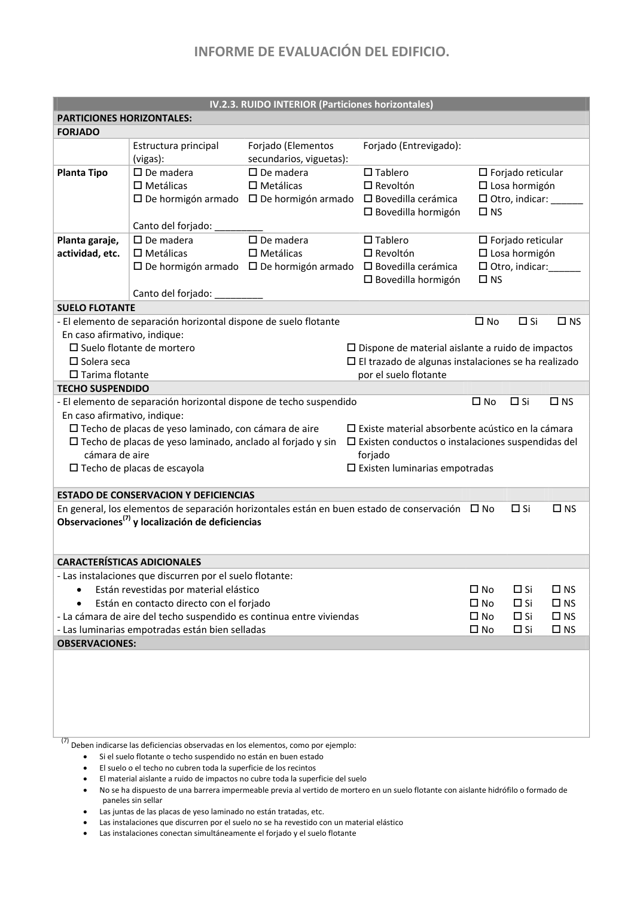

<!doctype html>
<html lang="es"><head><meta charset="utf-8">
<meta name="viewport" content="width=device-width, initial-scale=1">
<title>GUIA · Página física 45</title><link rel="stylesheet" href="../estilo.css">
</head><body>
<nav><a href="../index.html">Índice</a> › <a href="../doc/guia-pdf-a5d4ef5252ba-2016-11-01-813669d3066c.html">GUIA</a></nav>

<h1>GUIA · Página física 45</h1>
<header class="meta"><p><strong>IEE 2016</strong> · edición 2016-11-01 · capa guia</p>
<p>Documento <code>GUIA-PDF-a5d4ef5252ba</code> · SHA-256 del PDF <code>813669d3066c0ff79457d57b80b0512a4fbb248bc5db1f7baf473c369a064738</code></p>
<p>Página física 45 de 65.</p>
<p><a href="../../contenido/docs/GUIA-PDF-a5d4ef5252ba/2016-11-01__813669d3066c/fuente.pdf#page=45">Copia fiel del PDF fuente</a> · <a href="https://www.codigotecnico.org/pdf/Documentos/HR/IEE_2016.pdf">Fuente oficial</a></p>
<p><a href="https://www.codigotecnico.org/Guias/GuiaIEE_HR.html">Ficha de la disposición en la fuente oficial</a></p>
<div class="cita"><p><a href="../../contenido/docs/GUIA-PDF-a5d4ef5252ba/2016-11-01__813669d3066c/fuente.pdf#page=2">Créditos y autoría en el PDF fuente</a>. Reproducción con cita de fuente y autores.</p>
<p>Permiso literal: Se permite la reproducción del contenido total o parcial de esta Guía siempre y cuando se haga citando la fuente original.</p>
<details><summary>Leer los créditos completos y la autoría</summary><pre class="literal">                    Guía para la cumplimentación de la parte IV del IEE. Condiciones básicas de protección frente al ruido


Dirección y coordinación

Luis Vega Catalán

Mª Cristina Colomo Fernández

Eduardo González de Prado

Dirección General de Arquitectura, Vivienda y Suelo. Ministerio de Fomento

Mª Teresa Carrascal García

Instituto de Ciencias de la Construcción Eduardo Torroja. IETcc- CSIC


Autores

Mª Teresa Carrascal García

Amelia Romero Fernández

Mª Belén Casla Herguedas

Unidad de Calidad en la Construcción del Instituto de Ciencias de la Construcción Eduardo Torroja IETcc- CSIC


Se agradece la colaboración de


Belén Delgado Giménez

Fundación FIDAS

Alberto Esteban González

C.T.O. Estudios y proyectos – Gikesa

Giovanni Muzio

C.T.O. Estudios y proyectos

Francisco Labastida Azemar

Arquitecto, asesor CSCAE

Pedro F. Nogueira López

Universidad de A Coruña

Alejandro Sansegundo Sierra

Acústica SanSegundo


Esta Guía para la cumplimentación de la parte IV del IEE. Condiciones básicas de protección frente al ruido, nace en el marco del

convenio de colaboración llevado a cabo entre el Ministerio de Fomento y el Instituto de Ciencias de la Construcción Eduardo Torroja y

forma parte de la estrategia de este Ministerio de generar una serie de documentos de ayuda que faciliten la aplicación de la normativa

de la edificación y que en este caso concreto, ofrezca a los técnicos criterios para poder realizar una evaluación del estado inicial de las

edificaciones en lo referente a las condiciones acústicas de las viviendas existentes y plantear medidas que incrementen su confort

acústico.


En la redacción de este documento se ha utilizado algunos de los contenidos y de las figuras de la Guía de aplicación del DB HR

Protección frente al ruido. Dicha guía puede consultarse en:

http://www.codigotecnico.org/index.php/menu-documentos-complementarios/menu-guia-aplicacion-db-hr


Se permite la reproducción del contenido total o parcial de esta Guía siempre y cuando se haga citando la fuente original.


                                                2</pre></details></div>
<div class="aviso"><strong>Alcance y límites</strong><ul><li>Extracción automática sin revisión técnica humana completa. Contraste tablas, fórmulas, notas y excepciones con el PDF. La edición disponible no determina la vigencia ni la aplicabilidad a un proyecto.</li><li>Guia o documento divulgativo; no es texto normativo.</li><li>Extracción automática; el cotejo humano está pendiente.</li><li>Semántica y tablas no equivalen a validación exhaustiva.</li></ul></div></header>
<nav><a href="guia-pdf-a5d4ef5252ba-2016-11-01-813669d3066c__p0044.html">← Página 44</a> · <a href="guia-pdf-a5d4ef5252ba-2016-11-01-813669d3066c__p0046.html">Página 46 →</a></nav>
<p>Formato: <a href="../../contenido/docs/GUIA-PDF-a5d4ef5252ba/2016-11-01__813669d3066c/pagina/p0045.md">Texto de la página (Markdown)</a></p>
<p><a href="../../contenido/docs/GUIA-PDF-a5d4ef5252ba/2016-11-01__813669d3066c/bloque/p0045.json">JSON de bloques</a></p>
<pre class="literal">INFORME DE EVALUACIÓN DEL EDIFICIO. 
 
 
IV.2.3. RUIDO INTERIOR (Particiones horizontales) 
PARTICIONES HORIZONTALES:
FORJADO 
 
Estructura principal 
(vigas): 
Forjado (Elementos 
secundarios, viguetas): 
Forjado (Entrevigado): 
Planta Tipo 
 De madera 
 Metálicas 
 De hormigón armado 
 De madera 
 Metálicas 
 De hormigón armado 
 Tablero 
 Revoltón 
 Bovedilla cerámica 
 Bovedilla hormigón 
 Forjado reticular 
 Losa hormigón 
 Otro, indicar: ______
 NS 
 
Canto del forjado: _________ 
 
Planta garaje, 
actividad, etc. 
 De madera 
 Metálicas 
 De hormigón armado 
 De madera 
 Metálicas 
 De hormigón armado 
 Tablero 
 Revoltón 
 Bovedilla cerámica 
 Bovedilla hormigón 
 Forjado reticular 
 Losa hormigón 
 Otro, indicar:______ 
 NS 
 
Canto del forjado: _________ 
 
SUELO FLOTANTE 
- El elemento de separación horizontal dispone de suelo flotante 
 No 
 Si 
 NS
  En caso afirmativo, indique: 
 
 Suelo flotante de mortero 
 Solera seca 
 Tarima flotante 
 Dispone de material aislante a ruido de impactos 
 El trazado de algunas instalaciones se ha realizado 
por el suelo flotante 
TECHO SUSPENDIDO 
 
 
 
- El elemento de separación horizontal dispone de techo suspendido 
 No 
 Si 
 NS 
  En caso afirmativo, indique: 
 
 
 
 Techo de placas de yeso laminado, con cámara de aire 
 Techo de placas de yeso laminado, anclado al forjado y sin 
cámara de aire 
 Techo de placas de escayola 
 Existe material absorbente acústico en la cámara 
 Existen conductos o instalaciones suspendidas del 
forjado 
 Existen luminarias empotradas 
ESTADO DE CONSERVACION Y DEFICIENCIAS 
 
 
 
En general, los elementos de separación horizontales están en buen estado de conservación  No 
 Si 
 NS 
Observaciones(7) y localización de deficiencias 
 
 
 
 
 
 
 
 
CARACTERÍSTICAS ADICIONALES 
- Las instalaciones que discurren por el suelo flotante: 
 
 
 
• 
Están revestidas por material elástico 
 No 
 Si 
 NS 
• 
Están en contacto directo con el forjado 
 No 
 Si 
 NS 
- La cámara de aire del techo suspendido es continua entre viviendas 
 No 
 Si 
 NS 
- Las luminarias empotradas están bien selladas 
 No 
 Si 
 NS 
OBSERVACIONES: 
 
 
 
 
 
(7) Deben indicarse las deficiencias observadas en los elementos, como por ejemplo: 
• 
Si el suelo flotante o techo suspendido no están en buen estado 
• 
El suelo o el techo no cubren toda la superficie de los recintos 
• 
El material aislante a ruido de impactos no cubre toda la superficie del suelo 
• 
No se ha dispuesto de una barrera impermeable previa al vertido de mortero en un suelo flotante con aislante hidrófilo o formado de 
paneles sin sellar 
• 
Las juntas de las placas de yeso laminado no están tratadas, etc. 
• 
Las instalaciones que discurren por el suelo no se ha revestido con un material elástico 
• 
Las instalaciones conectan simultáneamente el forjado y el suelo flotante 
 
 
 
</pre>
<figure><a href="../../contenido/docs/GUIA-PDF-a5d4ef5252ba/2016-11-01__813669d3066c/figura/p0045.png"></a><figcaption>Página visual 45, para contrastar fórmulas, tablas y figuras.</figcaption></figure><h2>Tablas extraídas</h2><p>Datos candidatos: compruebe celdas y notas en el PDF.</p><ul><li><a href="../../contenido/docs/GUIA-PDF-a5d4ef5252ba/2016-11-01__813669d3066c/tabla/p0045_t01.json">p0045_t01.json</a></li></ul>
<h2>Segmentos que incluyen esta página</h2><ul>
<li><a href="../apartado/guia-pdf-a5d4ef5252ba-2016-11-01-813669d3066c__a0032.html">a0032 · Anejo 1. Parte IV del Informe de Evaluación del Edificio / INFORME DE EVALUACIÓN DEL EDIFICIO.</a></li>
</ul>
<footer>Generado estáticamente desde el corpus normalizado; sin JavaScript ni servicios externos. El HTML es una vista reproducible; conserve la fuente y la edición al citar.</footer>
</body></html>
